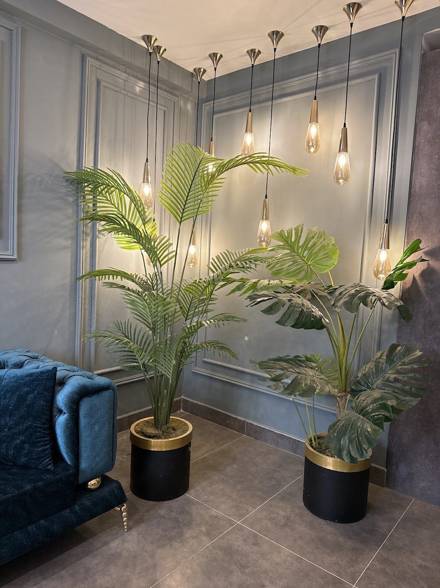

Uzm. Dr. Nuriye Kayıran

2000 yılında Karadeniz Teknik Üniversitesi Tıp Fakültesi'nden mezun oldum. Dermatoloji uzmanlığımı 2007-2012 yılları arasında Gaziantep Üniversitesi Dermatoloji Anabilim Dalı'nda tamamladım.
Sağlık ocağı, üniversite ve eğitim araştırma hastanesindeki çalışmalarımın ardından Atatürk Mahallesi'ndeki kliniğimde hastalarımı kabul ediyorum.
Muayenede önce şikayetin nedenini anlamaya çalışıyor, tedavi ya da uygulama kararını tanıya göre veriyorum.
Eğitim
- Karadeniz Teknik Üniversitesi Tıp Fakültesi (2000)
- Gaziantep Üniversitesi Tıp Fakültesi, Dermatoloji Uzmanlığı (2012)
Deneyim
- Gaziantep Üniversitesi Dermatoloji ABD
- Dr. Ersin Arslan Eğitim ve Araştırma Hastanesi
- Özel NCR Hastanesi
- Güvenevler Sağlık Ocağı
Çalışma yaklaşımı
Önce tanı
Uygulama kararı muayene ve tanı sonrasında verilir.
Bilimsel yaklaşım
Tedaviler güncel tıbbi bilgilere dayanır.
Korunma
Tedavi kadar korunma ve bakım önerileri de önemlidir.
Muayeneden kontrole
Önce tanı, sonra size uygun plan.
Muayene
Şikayetiniz ve cildiniz ayrıntılı muayene edilir, gerekirse dermoskopi yapılır.
Tanı ve plan
Gerekli tetkiklerin ardından tedavi seçenekleri sade bir dille anlatılır.
Tedavi
Planlanan tedavi ya da uygulamalar cildinizin durumuna göre başlatılır.
Kontrol
Belirlenen aralıklarla sonuç değerlendirilir, bakım önerileri güncellenir.
Size uygun bir saat bulalım
Formu doldurun ya da arayın, randevunuzu birlikte planlayalım.
Randevu oluşturun